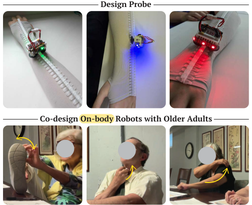
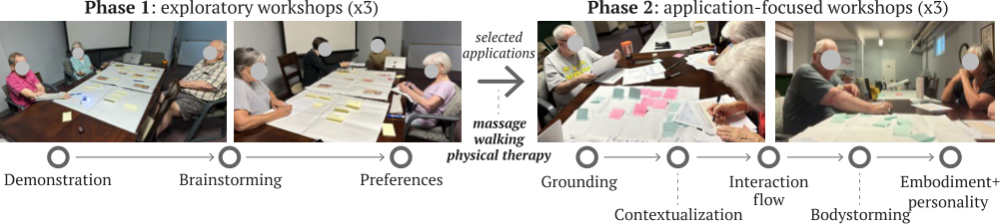
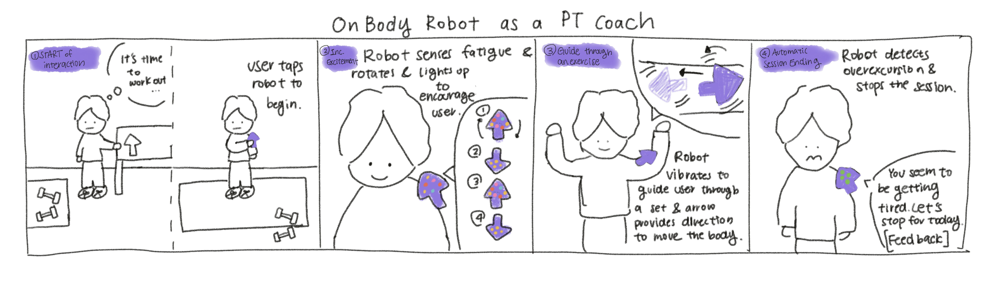
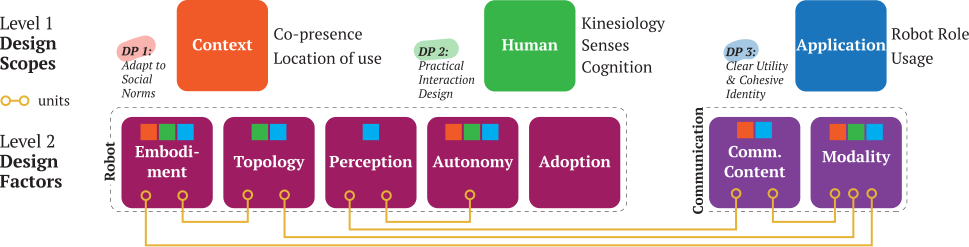

Studio / On-Body Robots
On-Body Robots
The Design of On-Body Robots for Older Adults
Victor Nikhil Antony, Clara Jeon, Jiasheng Li, Ge Gao, Huaishu Peng, Anastasia K. Ostrowski, and Chien-Ming Huang

Wearable technology has significantly improved the quality of life for older adults, and the emergence of on-body, movable robots presents new opportunities to further enhance well-being. Yet, the interaction design for these robots remains under-explored, particularly from the perspective of older adults.
We present findings from a two-phase co-design process involving 13 older adults to uncover design principles for on-body robots for this population. We identify a rich spectrum of potential applications and characterize a design space to inform how on-body robots should be built for older adults. Our findings highlight the importance of considering factors like co-presence, embodiment, and multi-modal communication.
Design process
We employed a two-phase co-design process to explore the design space of on-body robots. The first phase involved exploratory workshops that encouraged open-ended, broad exploration of on-body robots (divergence). The second phase consisted of workshops where participants engaged in application-driven design exercises (convergence).
Our design probe was Calico, a small robot that moves around the body on flexible 3D-printed tracks embedded in clothing and communicates via LED strips. Its simple setup and Wizard-of-Oz interface let us introduce the on-body robot concept to participants.

Exploratory workshops
Each 70 to 90 minute session began with a video and a demonstration of Calico on a sleeve that interested participants wore. Participants then brainstormed use cases, benefits and challenges on shared mind maps, and selected the ideas they found most promising.
Application-focused workshops
Workshops of about three hours on Massage (recreation), Physical Therapy (rehabilitation), and Walking (daily living). Participants imagined contexts of use, designed the start, during, and end of interactions on experience flow timelines, and bodystormed them with a 3D printed replica of the probe.
Phase 1 use cases included activities of daily living (e.g., personal hygiene, navigation), targeted therapies like acupuncture, recreational activities (e.g., dance), wearable jewelry, fall risk mitigation, and health monitoring and diagnostics.
Co-designed interactions
In the three application-focused workshops, participants designed on-body robots as Walking Sentinel, Pet-Like Walking Companion, Expert Masseuse and Gamified PT Coach.
“Outside, inside, my head is down because I’m scared to death that I’m going to hit uneven pavement.”
Melanie (F/76), on the impact of falls
Walking Sentinel
To address fall risks, participants conceptualized vigilant sentinels that deliver rhythmic cues (sound, vibration, or motion) prompting users to lift their feet. Feedback would intensify with the proximity and severity of a hazard, much like the escalating beeps of a car’s backup sensor. Worn near the ankle, the design was utilitarian and discreet, much like modern hearing aids.
Pet-Like Walking Companion
The Walking Companion was imagined to resemble a pet, reflecting the need for its design to match its relational and functional purpose. It would light up and use acoustic cues to express excitement before a walk.
Expert Masseuse
Participants imagined the Expert Masseuse having a soft exterior, allowing users to comfortably fall asleep during a session, and a heavier body for applying additional pressure. Bodystorming prompted discussions on custom 3D-printed form factors tailored to individual users and specific therapies.
Gamified PT Coach
Participants wanted PT to feel as if “you are playing a game with your robot”, with casino-style feedback. The robot would move across the body to the part being exercised and monitor range of motion and intensity. Its visual feedback was adapted to a haptic-driven system during bodystorming, after participants realized certain body poses prevented them from seeing the robot.

Design scopes and principles
We characterize a two-level design space that synthesizes and organizes our workshop findings. The concepts on Level 1, namely context, human, and application, scope the design space. Design anchors set boundaries for exploring the Level 2 design factors, robot and communication, and represent key design principles derived from our workshops.

DP1: Adapt to social norms
On-body robots, being novel and noticeable, may cause discomfort or embarrassment in social settings. Designs should be discreet, aesthetically pleasing, and context-aware: gentle vibrations can maintain privacy in public, while private settings allow more expressive communication.
DP2: Practical interaction design
Robots should be lightweight, soft, and adaptable to the user’s body, avoiding interference with natural movement. To prevent sensory overload, designers must consider the frequency and modality of feedback, ensuring it is gentle and non-intrusive.
DP3: Clear utility and cohesive identity
On-body robots must justify their use by leveraging proximity and mobility to enable functions beyond those of stationary devices. A clear utility, coupled with a cohesive agency, will help build trust.
“If we saw [Calico] today... in the city, [I would go] ‘what the hell?...what is that?’.”
Cindy (F/84), on public settings
“In terms of aging eyes, losing eye sight... There has to be more than one way of communicating with you...”
Raymond (M/76), on senses
“...my watch does all of these things but it doesn’t move... I don’t want it yet... while it looks like that.”
Lauren (F/74), on utility
Design factors
Level 2 holds the design factors for the robot and its communication. Design units show which factors should be considered jointly, as they interact closely.
Embodiment
Weight, softness, colors and visibility shape the user’s experience. The embodiment should avoid signaling disability or medical conditions; participants suggested enhancing “cuteness” and aligning with current fashion trends.
Topology
Participants envisioned locations from their feet to their shoulders, worn on clothing or on skin. The number of robots matters too: one Walking Sentinel for each leg, or several robots for the Gamified Coach.
Perception
Robots would sense the environment (hazards, weather, visibility) and the user (emotions, heart rate, muscle tension, goal progress). Accurate ego-location on the body would guide behavior around sensitive areas such as the neck.
Autonomy
Two classes of behaviors emerged: reactive behaviors in response to specific triggers, and proactive behaviors such as check-ins and prompts. Participants emphasized that the user must always retain ultimate control.
Adoption
Participants suggested onboarding with guided tutorials, easy charging and storage, washable materials, extended battery life, and a “find my robot” function, since older adults often misplace small devices.
Communication
Modalities included movement to specific body areas, LEDs, haptic and vibro-tactile feedback, voice and scent. Content was either supportive (encouragement and rewards) or informative (alerts, reminders, corrections).
“If it’s not good, [the user] asks the robot to stop and the robot stops immediately... then [the robot] looks at what’s going on and asks the person, ‘OK, I’m stopped. Do you want me to change the protocol or do you want me to just call it quits? You’re in control.’”
Norman (M/69), on user control
Co-designing on-body robots
The sensitive and safety-critical applications envisioned for on-body robots (e.g., fall prevention) highlight the importance of involving end-users as design partners. Our workshops provided key insights for engaging older adults as co-designers.
Lived experiences with on-body robots
Hands-on demonstration of the design probe jump-started participants’ design thinking. Participants who joined both phases were more comfortable imagining interaction paradigms, so a multi-stage process with shorter, focused workshops may enable deeper involvement.
Structure in design
A free-form activity followed by more structured experience flow worksheets engaged participants’ creativity while making the design process less overwhelming, given the novelty and complexity of on-body robots.
Bodystorming on-body interactions
Bodystorming let participants identify subtle, grounded design considerations. Raymond bodystormed the Physical Therapy scenario from the perspective of a blind person, highlighting the importance of multimodal communication.